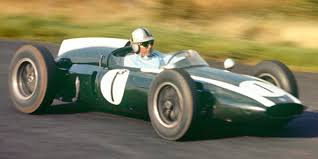
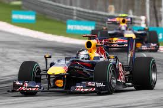

Meu interesse por Fórmula 1 surgiu ainda na infância, entre 2011 e 2012. Eu lembro claramente dos domingos em que meu pai acordava cedo para assistir às corridas do Felipe Massa correndo pela Ferrari. Naquela época, meus pais estavam construindo nossa casa, porque ainda morávamos na casa dos meus avós.
Durante essa fase, nosso vizinho acabou se tornando muito amigo do meu pai, e consequentemente o filho dele virou meu amigo também. O assunto principal entre nossos pais sempre era corrida, Fórmula 1 e automobilismo. O pai dele inclusive competia de moto em campeonatos no Autódromo de Interlagos, e um dia ele convidou eu e meu pai para assistirmos uma corrida. Essa foi minha primeira vez em um autódromo, e eu fiquei completamente impressionado com aquele ambiente, com o barulho dos motores e toda a emoção das pistas.
Desde pequeno, sempre fui apaixonado por duas coisas: tecnologia e automobilismo. Uma das minhas melhores lembranças era passar noites jogando Gran Turismo 5 com meu pai em corridas online. Eu ficava extremamente empolgado nas primeiras voltas, mas depois de muitas voltas acabava deixando ele terminar as corridas sozinho. Essas experiências fortaleceram ainda mais meu amor por corridas.
Meu gosto pelo automobilismo também aparecia em vários momentos da minha vida. Tive festa de aniversário com tema de corrida, ganhei um macacão da Ferrari e sempre gostei quando meu pai acelerava o carro durante as viagens. Meus pais até contam que eu falava “liga o turbo” quando era pequeno.


O Cooper T51/T53 foi um dos carros mais revolucionários da Fórmula 1 no final dos anos 1950 e início dos anos 1960. Ele ficou marcado por popularizar o uso do motor traseiro, uma inovação que mudou completamente o design dos carros da categoria e se tornou padrão nas décadas seguintes.

O Lotus 72 foi um dos carros mais inovadores e bem-sucedidos da Fórmula 1 nos anos 1970. Projetado por Colin Chapman, destacou-se pelo design aerodinâmico avançado, com radiadores laterais e formato em cunha, além de introduzir soluções que influenciaram gerações futuras. Com ele, a Lotus conquistou títulos importantes e marcou uma nova era na engenharia da F1.

O Williams FW07B foi um dos carros mais dominantes do início dos anos 1980. Conhecido pelo uso eficiente do efeito solo (ground effect), oferecia grande estabilidade e velocidade em curvas. Com ele, a Williams consolidou sua força na Fórmula 1, garantindo vitórias importantes e ajudando a equipe a se firmar entre as principais da categoria.

O McLaren MP4/5B foi um dos carros mais icônicos da Fórmula 1 no início dos anos 1990. Equipado com o poderoso motor Honda V10, destacou-se pelo equilíbrio entre desempenho e confiabilidade. Pilotado por Ayrton Senna, o carro foi fundamental na conquista do título mundial de 1990, marcando uma era de grande domínio da McLaren na categoria.

A Ferrari F2000 marcou o início de uma era dominante da Ferrari na Fórmula 1. Pilotada por Michael Schumacher na temporada de 2000, o carro combinava potência, confiabilidade e excelente desempenho aerodinâmico, sendo fundamental para encerrar um jejum de 21 anos sem títulos de pilotos da equipe.

O Red Bull RB6 foi um dos carros mais dominantes da temporada de 2010. Projetado por Adrian Newey, destacou-se pela aerodinâmica extremamente eficiente e alto nível de downforce, garantindo excelente desempenho em curvas. Com ele, Sebastian Vettel conquistou seu primeiro título mundial, marcando o início da era vitoriosa da Red Bull na Fórmula 1.

O AMG F1 W11, da Mercedes, foi um dos carros mais dominantes da história da Fórmula 1. Utilizado na temporada de 2020, destacou-se pelo inovador sistema DAS (Dual Axis Steering) e por sua incrível eficiência aerodinâmica, garantindo múltiplas vitórias e consolidando mais um título para a equipe.